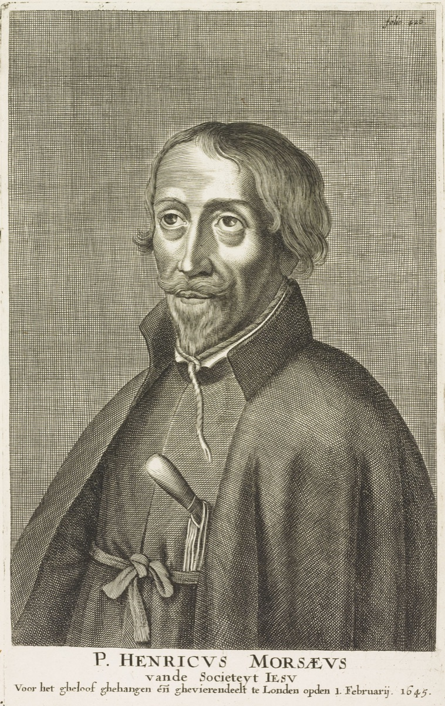
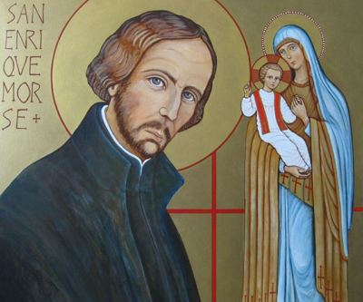

Mučenici iz Engleske i Walesa (10 svetaca)
Svećenik
Sv. Henrik Morse
1595. – 1645.
Engleski isusovac služio je londonskim bolesnicima za vrijeme kuge, pribavljajući lijekove i donoseći sakramente umirućima. Njegov svećenički život prolazio je kroz misiju, zatvore i progonstvo, sve do pogubljenja u Tyburnu.

Izvor slike


Izvor slike
- Spomendan
- 1. veljače
- Zaštitništvo
- Nije navedeno u izvoru
- Životni vijek
- 1595. – 1645.
- Djelovanje
- Bolesnici i umirući · Obraćenje i novi počeci · Progoni i progonstvo · Mučeništvo
- Razdoblje
- 16., 17. stoljeće
- Rođenje — dostupni podaci
- 1595.; dan i mjesec nisu potvrđeni u provjerenom izvoru.
- Mjesto rođenja
- Engleska
- Datum smrti
- 01.02.1645.
- Mjesto smrti/mučeništva
- Tyburn, London, Engleska
- Okolnosti smrti/mučeništva
- Pogubljen vješanjem i sakaćenjem zbog katoličkoga svećeništva i djelovanja za progona.
- Uloga
- Svećenik
- Mučenik
- Da
- Ostale oznake
- Mučenik engleskih protukatoličkih progona
- Pripadnost
- Isusovac
- Drugi oblici imena
- Henry Morse · Henry
Životopis
Sveti Henry Morse bio je engleski svećenik, isusovac i mučenik koji je velik dio svećeničkoga života proveo između misije, zatvora i progonstva. U Londonu je ostao zapamćen po služenju oboljelima od kuge: pribavljao im je lijekove, umirućima donosio svetu pričest i pripremao pokojne za ukop. Njegov je život završio na stratištu u Tyburnu 1. veljače 1645. Crkva ga časti među Četrdesetoricom mučenika Engleske i Walesa.
Rođen je 1595. u Bromeu, u engleskoj grofoviji Suffolk, u protestantskoj obitelji Roberta Morsea i Margaret Collinson. Otac mu je bio zemljoposjednik iz Norfolka. Sa šesnaest godina započeo je studij prava na koledžu Corpus Christi u Cambridgeu, a zatim je pravničko školovanje nastavio u Londonu. Njegova prva izobrazba tako nije bila usmjerena prema svećeništvu. Tek nakon očeve smrti 1614. otišao je u Francusku, gdje se njegov brat William u Douaiju pripremao za svećeničku službu.
U Douaiju je Henry prihvatio katoličku vjeru. Engleski kolegij u tom gradu okupljao je mladiće koji su se školovali izvan domovine kako bi se poslije vratili služiti engleskim katolicima. Henry se nakon obraćenja vratio u Englesku radi sređivanja novčanih poslova. U Doveru je uhićen jer nije htio položiti traženu prisegu vjernosti, a zatim je zatvoren u Southwarku, u južnom dijelu Londona. Još prije ređenja upoznao je život katoličkih svećenika s kojima je dijelio tamnicu.
U zatvoru je proveo približno četiri godine. Kad je oslobođen i protjeran iz zemlje, mogao se vratiti školovanju. U kolovozu 1618. ponovno je bio u Douaiju, odakle je poslan u Engleski kolegij u Rimu. Ondje se pripremao za svećeništvo i služio drugim prezimenom kako bi prikrio identitet pred engleskim doušnicima. Zaređen je u Rimu, a 1624. krenuo je u englesku misiju. Nakon pravničkoga studija, obraćenja, zatvora i studija u inozemstvu vratio se u domovinu kao katolički svećenik.
Prvo je djelovao u Newcastleu, pomažući isusovcima, te započeo novicijat za život u Družbi Isusovoj. Već sljedeće godine ponovno je uhićen. Iz zatvora u Newcastleu premješten je u dvorac York, gdje je ostao više godina. Ondje je nastavio redovničku pripravu pod vodstvom isusovca Johna Robinsona, koji je također bio zatvorenik. Henry je pod njegovim vodstvom dovršio novicijat i položio prve redovničke zavjete.
Nakon približno tri godine zatočeništva ponovno je prognan. Otišao je u Niske zemlje i ondje svećenički služio engleskim i irskim vojnicima u španjolskoj vojsci. To nije bio konačan odlazak iz engleske misije: krajem 1633. vratio se u domovinu. Novi prostor njegova djelovanja postao je London, osobito područje St Giles-in-the-Fields. Ondje će se njegova svećenička služba povezati s jednom od najtežih potreba gradskoga stanovništva, njegom oboljelih od kuge.
Kad se zaraza proširila Londonom, Morse je obilazio bolesne i pomagao im u onome što im je bilo najpotrebnije. Pribavljao je lijekove, a umirućima donosio svetu pričest kao popudbinu za prijelaz u vječni život. Brinuo se i za tijela pokojnika, pripremajući ih za ukop. Njegov se rad protezao od traženja materijalne pomoći do sakramentalne skrbi za čovjeka na samrti. I sam se tijekom služenja zarazio kugom, ali se oporavio i nastavio djelovati.
U tom je poslu surađivao s Johnom Southworthom, dijecezanskim svećenikom koji je poslije također podnio mučeništvo. Zajedno su prikupljali milodare kako bi se oboljelima pribavili hrana, lijekovi i odjeća. Pomoć je zahtijevala i sredstva i ljude spremne približiti se oboljelima. Morse je sudjelovao u zajedničkom pothvatu kojim se nastojalo odgovoriti na glad, bolest i napuštenost. Southworth mu je bio suradnik u toj službi, premda nije pripadao Družbi Isusovoj.
Godine 1636. Morse je ponovno uhićen i zatvoren u Newgateu. Pred sudom je bio optužen zbog svojega svećeništva te zbog navodnoga odvraćanja kraljevih podanika od njihove vjere i vjernosti. Po prvoj je točki proglašen krivim, a po drugoj oslobođen; izricanje konačne kazne bilo je odgođeno. Za njegova boravka u zatvoru dovršeno je i važno razdoblje redovničkoga života: pred isusovcem Edwardom Lusherom položio je svečane zavjete. U molitvi povezanoj s tim zavjetima zahvaljivao je Bogu i izražavao želju da primljeno dobro uzvrati dobrim djelima.
U lipnju 1637. pušten je uz jamčevinu, nakon zauzimanja kraljice Henriette Marije. Kada je 1641. novim kraljevskim proglasom svećenicima određen odlazak iz Engleske, ponovno je pošao u progonstvo kako jamci ne bi snosili posljedice njegova ostanka. Opet je postao vojni kapelan, ovaj put u engleskoj pukovniji u španjolskoj službi. U njegovu su se životu izmjenjivala mjesta i okolnosti službe: katoličke obitelji u Engleskoj, zatvorenici i vojnici izvan domovine.
U Englesku se vratio 1643. Nakon otprilike godinu i pol ponovno je uhićen te držan u Durhamu i Newcastleu. Potom je morem prevezen u London. Na sud je izveden 30. siječnja 1645. i osuđen na smrt na temelju prijašnje osude. Ovoga puta nije uslijedilo oslobođenje. Na jutro pogubljenja slavio je posljednju misu u zatvoru.
Pogubljen je u Tyburnu 1. veljače 1645. Umro je vješanjem, nakon čega mu je tijelo raščetvoreno. Imao je oko pedeset godina. Njegovo svećeništvo trajalo je nešto više od dva desetljeća, obilježena opetovanim zatočenjima, odlascima i povratcima. Najopipljiviji trag njegove londonske službe ostao je u skrbi za ljude kojima su trebali hrana, lijekovi, sakramenti i dostojan ukop.
Papa Pio XI. proglasio ga je blaženim 15. prosinca 1929., među 136 engleskih mučenika. Papa Pavao VI. proglasio ga je svetim 25. listopada 1970. kao jednoga od Četrdesetorice mučenika Engleske i Walesa. Spominje se 1. veljače, na dan smrti, a engleski i velški isusovački mučenici skupno se slave 1. prosinca. Morseovo svjedočanstvo povezuje mučeničku postojanost s tihim svećeničkim poslovima među bolesnima: Krista je ispovijedao pred sudom, a služio mu je donoseći pomoć i pričest onima koji su umirali.
Život i nasljeđe
Jedan od neobičnijih dijelova Morseove priprave za Družbu dogodio se u zatvoru. S njim je bio zatočen isusovac Ivan Robinson, koji mu je pomogao obaviti duhovne vježbe potrebne za dovršenje novicijata. U okolnostima u kojima je normalni raspored kuće bio nemoguć, redovnička se izgradnja nastavila preko osobne pratnje. Njegov zatvor stoga nije bio samo prekid službe nego i mjesto važnoga koraka u vlastitome pozivu.
Na kontinentu je služio kao kapelan engleskim vojnicima u španjolskoj vojsci. Takva je služba pripadala drukčijoj svakodnevici od tajne pastve u Londonu, ali je također uključivala bolest, udaljenost od doma i opasnost. Kad mu je zdravlje oslabilo, pomagao je u odgoju novaka. Promjene službe pokazuju kako su poglavari nastojali koristiti njegove sposobnosti u različitim okolnostima, umjesto da cijeli njegov život vežu uz jedno jedino poslanje.
Pomoć tijekom londonske epidemije uključivala je i pripravu umrlih za pokop. Duhovna skrb, pribavljanje lijekova i rad uz tijela umrlih pripadali su istoj žurnoj potrebi. Intervencija kraljice Henriette Marije pri jednom oslobađanju pokazuje da je njegov rad bio poznat i izvan najužega katoličkog kruga. Ipak, priznanje te službe nije postalo trajnim jamstvom sigurnosti u kasnijim političkim okolnostima.
Morseov završni proces temeljio se i na njegovu povratku nakon ranijega izgona. Za vlasti je sama njegova ponovna prisutnost u zemlji imala pravno značenje. To objašnjava zašto niz ranijih oslobađanja ne treba razumjeti kao potvrdu da je svećenička služba postala dopuštena. Njegov život povezuje ponavljano zatočenje, prekide i povratke, ustrajan rad među bolesnima i konačnu osudu. Takva kronologija približava dugotrajno iskustvo nesigurnosti koje se ne vidi ako se pamti samo dan pogubljenja.
Pročitaj više na izvornoj stranici ↗